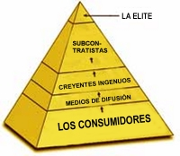
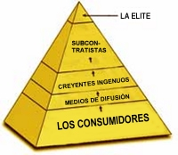

Igual que el químico August Kekule, en 1865, tuvo un sueño que le reveló la estructura del anillo del benceno —averigüe sobre ello, es interesante—, tuve una epifanía que me gustaría compartir con ustedes. Aunque no se aproxima a la inspirada revelación de August, creo que da una buena imagen de cómo sobrevive esta situación. Estoy empezando a ver toda la estructura de la fantasía paranormal como una pirámide, en la que los que están en cada nivel se alimentan de los que están debajo.
El nuevo monstruo tecnológico materializado como el vigoroso producto del estallido del desarrollo de los medios de difusión, la comunicación, y lo fácilmente que casi cualquiera tiene acceso a la tecnología, han creado una situación singular en la mayor parte de nuestras vidas. Aunque cualquier cambio tan dramático de paradigma puede servir —y sirve— para beneficiarnos a todos en general, esto puede ser la espada de dos filos que hemos visto surgir repetidamente a lo largo de la historia. La Revolución Industrial hizo surgir aspectos estimulantes y benéficos para la sociedad, junto a los tecnófobos a principios de 1800 que pagaron un precio inesperado por esos beneficios, lucharon contra el flujo inexorable de la historia y fueron absorbidos por la marea del progreso. Hoy, el acceso universal al viaje por el mundo ha creado posibilidades maravillosas para la difusión de las ventajas culturales y científicas, pero también para la proliferación de infecciones por VIH y la epidemia de SARS (junto con muchas otras enfermedades), las que estamos combatiendo con las nuevas herramientas que también están disponibles para nosotros en el otro filo de esa espada. Cada paso de gigante hacia adelante implica algunos pasos hacia el costado y algunos pequeños retrocesos, aunque el resultado cada vez es cierto avance.
Hoy, hay una industria compleja, poderosa y determinada que contenta a los creyentes en insensateces tales como la astrología, el espiritismo, la homeopatía, la profecía y la pseudociencia con una dieta regular de literatura, mitología, “descubrimientos” falsos pero atractivos y nociones deslumbrantes. Son los practicantes reales (los que hacen apariciones públicas en los medios de difusión y en los escenarios, los que escriben los libros más vendidos y brindan encuntros personales individuales con aquellos que necesitan refuerzo de sus ilusiones) quienes están en la cima de la pirámide, este constructo social. John Eduard, Sylvia Brown, Uri Geller, Derek Acorah, Masuaki Kiyota (junto con no más de cien otras personas) ocupan este ápice, evitando la confrontación interpersonal cuidadosamente en un entorno tan poblado y en una atmósfera tan enrarecida. Se apoyan con cuidado entre sí, aunque siempre (sabiamente) vigilan sus espaldas.
Inmediatamente debajo de ellos en la pirámide están los subcontratistas como Brian Josephson, Harold Puthoff y Gary Schwartz, quienes reciben suficientes migas del banquete de más arriba como para sobrevivir, y apoyan con entusiasmo a sus benefactores. Cegados por el brillo de las medallas académicas que ostentan, no perciben las risas disimuladas y las sonrisitas encima de ellos, y están serenamente agradecidos por el reconocimiento ocasional que les otorgan los buitres que se alimentan de ellos. Raramente se apartan de sus posiciones asignadas en la estructura.
A continuación, encontramos un nivel de creyentes ansiosos tipificados por George Owen, David Icke y Montague Keen, quienes tienen nociones hiperdesarrolladas de su inteligencia y discernimiento, y se dedican a la hipérbole libre y arrogante para mantener las ficciones que atesoran. Su santo patrono es el Hombre de la Mancha, y se hallan entre los incontables Sanchos que apoyan la locura que ven transcurrir sobre ellos.
Un nivel intermedio y mucho mayor de la pirámide está atestado por los medios de difusión. Educados principalmente en humanidades, por lo que carecen de educación o conocimientos científicos sólidos, y con la meta constante de encontrar la “noticia perfecta” que los persigue todo el tiempo, esta multitud pesca cualquier retazo de propaganda que se les filtra desde lo alto, embelleciéndolo y dándole sabor con gratitud antes de presentárselo a los consumidores que se encuentran de bajo, a cambio de un tributo adecuado, por supuesto. Larry King, Montel Williams y David Frost están entre sus filas voluntariosas.
En la base de la pirámide encontramos al público consumidor. Éste, el más grande de todos los grupos, compone la estructura que da soporte a todas las otras. Pero, como en toda estructura piramidal, si este nivel se achica, se erosiona y se desmorona, los niveles superiores tiemblan y empiezan a caer. Espero producir el colapso de esta insidiosa estructura.
Desde hace tres semanas, cuando pedí disculpas a los que pudieron haber hallado egoísta mi publicación de cartas elogiosas en nuestra página, recibí muchos mensajes alentándome a continuar esta inclusión. Parece que encontrar situaciones similares en las vidas de otras personas tiene un útil efecto de refuerzo, así que continuaré con la práctica. Un lector conocido sólo como “Seth” nos escribe:
Noté sus historias de “despertar” últimamente en la sección de comentarios de los viernes en su sitio web y quise compartir algo de mi experiencia.
Pasé 13 años en una escuela de artes marciales que adoraba a la Tierra como Diosa y como entidad femenina, así como a las energías inconmensurables y al poder del sueño para reformar nuestras vidas, como si fueran cosas reales. En relación con las acciones, no todo esto es malo. Ver a la tierra como algo vivo y con semejanza con una divinidad puede ayudarnos a tomar mejores decisiones sobre cómo tratamos a nuestros ríos, animales y calidad del aire, aunque ahora me parece que años de estudio científico podrían conducirlo a uno a la misma conclusión (lo cual no hace, post hoc, que la idea “religiosa” sea correcta). Trabajar con energías no medibles en un entorno de artes marciales puede llevar a una sensibilidad mayor en la relación con nuestros compañeros humanos, aunque ahora me parece que las “energías no medibles” que no existen son una razón necia para aprender a ser sensible con los demás y tratar bien a la gente. Y el poder de ver a los sueños como un mensaje del inconsciente puede ser posiblemente una forma de afectar el desarrollo personal, aunque ahora, de nuevo, me parece que un foco indebido en las motivaciones inconscientes de uno pueden conducir a más problemas que soluciones o comprensión. Ahora encuentro las explicaciones evolutivas y biológicas mucho más informativas y apasionantes como formas de entender los sueños.
Mi tiempo en esta escuela estuvo lleno de falsas promesas que nunca se cumplieron. Una de ellas me la hizo un miembro principal y profesor de muchos años en la escuela, y fue: “la Diosa proveerá materialmente si le sirves”. Esto fue transmitido por el líder de la escuela, quien había estudiado con un montón de gurúes de los ‘70. Se me dijo que dictaría mi propia clase y se me pagaría por dictarla. Esperé que esa Diosa proveyera. Nunca sucedió aunque enseñé allí durante 9 años. De hecho, durante 5 de esos años viví en la escuela en un asentamiento de tipo comunitario. De mis bolsillos salieron decenas de miles de dólares a los bolsillos del maestro.
Mi quiebre o iluminación surgió en verdad como resultado de un viaje con drogas. Ingerí algunos “bizcochos” de hachís (la única vez en mi vida que utilicé una droga ilegal) y me embarqué en un viaje bastante poderoso. Algo asustado, fui a ver a un amigo que se recuperaba de la adicción al alcohol y las drogas, devoto de una gran cantidad de creencias extrañas que lo hacían sentirse realmente importante, para que me guiara en la experiencia. Reflexionando sobre el viaje un par de días más tarde, me di cuenta de que no podía diferenciar entre lo que “realmente” pasó, según mi amigo, y lo que fue disparado en mi propia mente por la droga. La única conclusión lógica es que mi mente creó la totalidad del viaje, influida por la droga. Parece bastante evidente, lo sé, pero el punto es que esto me condujo a reflexiones posteriores sobre todo lo que me habían dicho sobre el “chi” y “la Diosa” y la “energía”. Nada de ello resistía a la simple verificación lógica: ¿hay una razón externa legítima para que suceda esto? Si no la hay, ¿cómo un invento de la mente puede ser una guía infalible de lo que estoy percibiendo en términos de “energía”, “chi” y todo lo demás que yo había aceptado? Es claro que no puede serlo. Por lo tanto, parece valioso aplicar la única cosa que parece decirnos algo acerca de la naturaleza del universo en que vivimos: el escepticismo, por medio de la razón y la ciencia.
Siempre he leído libros de ciencia e incluso tengo un doctorado en estudios religiosos. Supongo que yo mismo me puse una trampa de contradicciones inescapable, al estilo de Houdini. Incluso recuerdo haberlo escuchado a usted en la Radio Pública de Wisconsin hace años, y haberlo criticado por no abrir su mente a la posibilidad de la astrología. Creo que estaba preocupado por su forma directa de hablarle a una creyente que llamó. Ahora uso un enfoque similar con mucha gente, aunque al mismo tiempo intento entender de veras por qué pueden creer cosas tan ridículas. Mis disculpas por mis críticas en el auto hace años.
Mi estructura de creencias se vino abajo hace dos años y medio. Tengo que agradecerle a Carl Sagan y a su excelente libro, “El mundo y sus demonios”, por “salvar” mi mente racional de los embates de los sistemas de creencias irracionales. Luego de mi pequeña experiencia con los “bizcochos”, leí este libro y redescubrí lo que siempre disfruté sobre Sagan y la ciencia cuando era niño: la increible complejidad y maravilla presente en la existencia misma del universo, sin necesidad de extenderla a alguna potencia sobrenatural que… hace… ¿qué? Como sea, no sé qué es lo que se supone que hacen esas potencias.
Todavía lucho emocionalmente librándome de esa gigantesca construcción de falsedad que acepté por tantos años. Se parece un poco a una muerte en la familia, excepto que es una familia inventada, creada en el sótano para aliviar la opresiva soledad de la juventud, que desaparece para revelar tal cual es la realidad de las relaciones y el mundo que tenemos frente a nosotros, sin necesidad de apelar a otra cosa que lo que nos brinda, es decir, las herramientas para estudiar, analizar, comprender y, por sobre todas las cosas, pensar con claridad.
Gracias por mantener encendida la vela de la racionalidad para el mundo. Espero que todos los que vean tras el velo de cosas tales como las que yo he creído voluntariamente, se vuelvan una voz del poderoso escepticismo cada vez que puedan usarlo. Por lo que puedo decir, vivimos en un mundo de superstición que iguala cualquier cosa que alguna vez hayamos experimentado. Quizá es el resultado de que haya demasiada gente… ¡pero lejos de mí presumir de tal cinismo! Quizá es más probablemente el resultado de demasiada mostaza en los estómagos de esa “demasiada gente”.

Seth: muchas gracias por su excelente relato. Espero que su historia pueda fomentar otras “recuperaciones” similares, y le agradezco por compartir ésta con nosotros. Su mención del último libro de Sagan me da la oportunidad de sugerírselo nuevamente a todos nuestros lectores. Para ser breve, menciono estos tres libros como las referencias más valiosas que puedo encontrar para aquéllos que realmente quieren ser desviados y redirigidos hacia la realidad:
“El mundo y sus demonios”, de Carl Sagan
“Por qué la gente cree cosas extrañas” (“Why People Believe Weird Things”), de Michael Shermer
“El relojero ciego”, de Richard Dawkins
Cualquiera que lea estos libros y no emerja con una mejor comprensión del mundo real (en el que todos estamos inmersos, mal que nos pese) no es capaz de liberarse de las cadenas de la ignorancia y de la pobreza de mente que nos asedian a todos.

Hagan como el lector Mark Bell y visiten http://www.electronichealing.co.uk/products/energy.htm para ver una “unidad de biorresonancia controlada por microprocesador [que] usa electrónica avanzada para entregar los patrones de resonancia homeopática almacenados en su interior”. Comenta Mark:
Ahora estoy muy preocupado por no haber verificado mis “patrones de resonancia homeopáticos” durante algún tiempo. Sin embargo, he estado expuesto al campo electromagnético normal producido por cualquier electrodoméstico conectado a la red de corriente alterna doméstica, así que supongo que estaré bien. Si esto es otra cosa que un reóstato sumamente caro con una aguja entonces gustosamente me comeré mi sombrero. ¿O debería decir “mi aumentador de emisiones de rayos cósmicos”?
Veo aquí un gran avance para la pseudociencia. La homeopatía, por sí misma, es pura palabrería, ¡y aquí se la inserta en otra forma de charlatanería “vibracional”! Este sólo uno de los cientos de tales dispositivos que se le venden al ingenuo, y se venden muy bien. Por supuesto el peligro más grande que producen tales dispositivos es la posibilidad de que los que realmente necesitan asistencia abandonen los medios legítimos y confíen en esta charlatanería inútil…
He mencionado con anterioridad el hecho de que las docenas de pruebas del poder de la plegaria que se realizan cada año, frecuentemente con altos costos, producen sólo una fracción de resultados positivos, encuadrables dentro del rango esperado de error; pero ésos son los resultados (los únicos resultados) que los editores de los medios de difusión eligen presentar. Obviamente, otra prueba fe fallida, si es que alguna vez se informa, es simplemente otra “no historia” para los medios. De esta forma, se da la impresión de que la plegaria se ha probado y se la encontró efectiva.
Bien, se ha realizado una serie de estudios muy abarcativos y de amplio espectro durante tres años, por parte de un equipo de especialistas cardíacos del Centro Médico de la Universidad de Duke de Carolina del Norte, que involucró a 750 pacientes en nueve hospitales y doce grupos de plegaria en todo el mundo. Los que rezaron por los pacientes incluían madres cristianas estadounidenses, monjas de un convento de carmelitas de Baltimore, musulmanes sufíes, monjes budistas en Nepal, y doctores y estudiantes ingleses de Manchester. Incluso se enviaron plegarias por correo electrónico a Jerusalén y ubicadas en el Muro de los Lamentos.
En concordancia con un correcto procedimiento doble ciego, los nombres de los pacientes fueron elegidos al azar por una computadora y se los envió a los grupos de plegarias, quienes empezaron a rezar inmediatamente por la recuperación de los pacientes seleccionados; ni el personal ni los pacientes sabía por quién se rezaba y por quién no. Un análisis de los resultados encontró que no hubo diferencias significativas en la recuperación y la salud de ningún grupo de pacientes.
Como se esperaba, estos resultados bastante definitivos fueron rechazados por personas tales como el Obispo de Durham, el Reverendo Tom Wright, quien dijo: “Es como tomarle un examen a Dios para ver si Dios lo pasa o no”. Síp. Y Dios falló, Reverendo. Ah, pero Wright señaló que la Biblia advierte que no hay que poner a prueba a Dios. Esto es ciencia, Reverendo, no mitología. Como nos señala el lector Dan Morrison, cuando otros estudios mucho más pequeños de años anteriores parecían indicar resultados positivos en favor de los poderes de Dios, no se nos recordó esta prohibición divina. Como dice Dan: “Parece que, en lo que se refiere a los experimentos, Dios participa de manera inconstante”.
El lector “Jack” me escribe:
Soy chino, y los monjes shaolín han sido parte de nuestra cultura por cientos de años; las enseñanzas shaolín son el origen de todas las artes marciales de hoy. Sin embargo, según mi experiencia y según lo entiendo, los espectáculos shaolín que han estado haciendo giras en Estados Unidos, Hong Kong y aquí en Australia, además de otros países, no son monjes shaolín auténticos. Más bien, son estudiantes de escuelas de artes marciales que viven cerca del verdadero Templo Shaolín.
Mis disculpas, por supuesto, si esto es así. Sin embargo, sería una gran sorpresa para mí descubrir cualquier grupo de artes marciales que no use afirmaciones sobrenaturales y viejos trucos para vender su filosofía. Hace mucho, desafié a los lectores de varias revistas de artes marciales para venir a reclamar el premio de la JREF con una demostración, y ninguno respondió…
En nuestra página del 10 de octubre de 2003, les presentamos un diálogo entre una compañía de “libre energía” llamada “Energia”, y el lector Mike Lilley. Hubo un intercambio posterior en el cual Mike acusó al pretendido inventor, un tal Theodore Karavassilis, de ser un fraude liso y llano. Karavassilis respondió en un tono algo molesto, ya que no entendía por qué se lo acusaba de ello. Prometió:
La 1ª demostración en vivo tendrá lugar en Atenas en la 1ª semana de diciembre y todas las mediciones las realizará el CRES (Center of Renewable Sources of Energy [Centro de Fuentes Renovables de Energía]).
Mike respondió:
Sí, estoy esperando los resultados publicados. Seguramente también estarán presentes miembros reconocidos de la comunidad científica, ¿verdad? Si tiene una máquina real que crea energía “libre”, no necesitaría “inversores”, ya que tendrá varias compañías REALES aportando miles de millones por su dispositivo. Predijo que la probabilidad de que esto suceda es aproximadamente la misma de que el universo implote para convertirse en un punto de singularidad mañana…
Tengo una pregunta. ¿Usted es el inventor de esta máquina, o el que la vende? ¿Por qué no publica un estudio científico sobre ella? ¿Por qué no tiene universidades estudiándolo? ¿Por qué no va a las compañías de energía y la vende por $ miles de millones $ de dólares? ya que, estoy seguro, a ellos les encantaría encontrar una forma más fácil (y más barata y limpia) que los combustibles fósiles para generar energía y disparar sus ganancias. Gastan miles de millones sólo para cumplir con las leyes sobre contaminación, piense cómo les gustaría pagarle muchos cientos de millones para no tener que hacerlo más. ¿Por qué no se presenta para el $ desafío del millón de dólares $ presentando su descubrimiento ante la organización de Randi. El dinero para la “inversión” está allí para que usted lo tome. Todo lo que tiene que hacer es mostrarnos que su máquina funciona. Vea este enlace: http://www.randi.org/research/index.html
Si usted NO es el inventor de esta cosa, sino simplemente el que lo vende (su sitio da la impresión de que usted es el inventor), entonces quizá alguien lo engañó. Si es así, lo he juzgado mal y si así es, por favor contrate inmediatamente los servicios de un científico de la energía competente. Lo ayudará a escapar de un futuro encarcelamiento por fraude en internet probándole de qué forma lo están engañando.
Muy bien. Tengo que objetar seriamente la actitud del Sr. Lilley. Aunque estoy de acuerdo con sus opiniones científicas, no puedo apoyar en lo absoluto su conclusión de que el Sr. karavassilis es necesariamente un fraude. Mi experiencia en este campo me ha mostrado que la mayor parte de los creyentes en la “energía libre” o el “movimiento perpetuo” se engañan a sí mismos, y uno no puede culpar a una persona honestamente engañada por tratar de atraer inversores; excepto, por supuesto, que si uno ofrece bienes como esos tiene una fuerte obligación de verificar sus afirmaciones antes de pedir apoyo financieron. Cualquier maestro competente puede disuadir con facilidad al señor Karavassilis, si él decide escuchar. Simplemente no tiene conocimiento sobre los asuntos en los que está involucrado.
Aunque puedo entender la ira del señor Lilley, creo que puede estar equivocado sobre los motivos del señor Karavassilis y por lo tanto acerca de su carácter. Le he escrito al Centro de Fuentes Renovables de Energía a sus oficinas de Londres, Atenas y Nueva York para preguntarles sobre esta prueba prometida, y me reservaré los comentarios subsiguientes hasta entonces…
![[Los astronautas Ed Lu y Yuri Melenchenko]](http://www.randi.org/images/102403-EdLu.jpg)
El doctor Ed Lu es un hombre con un doctorado en física aplicada de Stanford, y un grado en ingeniería eléctrica de Cornell. Toca el piano, habla con fluidez ruso y chino, y es un hábil aviador acrobático. En resumen, no es una persona ordinaria. Pero una cosa más lo hace destacarse (mucho) del resto de nosotros. Es un astronauta de los Estados Unidos, actualmente a bordo de la Estación Espacial Internacional (ISS por su sigla en inglés), ¡volando en torno a la tierra a 29.000 kilómetros por hora!
El 26 de abril, Ed Lu y su compañero de viaje, el cosmonauta Yuri Malenchenko, despegaron del Cosmódromo de Baikonur en una nave espacial rusa llamada Soyuz TMA, la última de una serie de naves espaciales basadas en el diseño de la nave que el primer hombre en el espacio, Yuri Gagarin, voló hacia el espacio hace más de 40 años. Ya que las instalaciones del Challenger están cerradas para actualizarlas con seguridad, todo el contacto con la ISS ha sido por medio de la tecnología rusa del Soyuz, y ha servido muy bien para llevar provisiones y tripulaciones de ida y de vuelta.
A principio de abril, dos semanas antes de que la tripulación de la Expedición Siete fuera lanzada, recibí una llamada de bienvenida de Ed, quien me dijo que podría convencer a la NASA de dejarle hacer un proyecto conjunto con la JREF, un truco de magia entre la Tierra y el Espacio. Me resultó una excelente idea, y se arregló así. Pasaron los meses, luego vino la llamada de Ed; ya que sólo tenía disponibles unos pocos días en órbita durante los cuales tendría una “ventana” para nuestro trabajo, surigió que nos apuráramos y lo hiciéramos dentro de los siguientes cinco días. Dije que estaba bien, y esperé con ansiedad realizar un Truco Fuera de Este Mundo con el doctor Lu. ¡Luego Houston me llamó y me dijo que estuviera listo en dos horas! Revolví y alboroté como era lógico, pero en el apuro no pude encontrar las camisetas y distintivos de la Expedición Siete que nos habían dado, así que tuvimos que salir “al aire” (¿al espacio?) vestidos como estábamos. Aunque originalmente habíamos planeado tener una conexión con video dividido, todas las instalaciones de video de la ISS estaban ocupadas con asuntos oficiales más serios como la vigilancia de basura espacial (vea nuestra columna del 4 de julio donde se publica un comentario sobre ello) y nos conformamos con que Houston filmara la parte de la acción que transcurría en la ISS, mientras que de nuestro lado poníamos dos cámaras de video. La magia de la edición juntaría los dos extremos. Nos comunicamos por teléfono, ¡y me alegra no haber tenido que pagar la cuenta!
Antes de seguir adelante, quiero aclarar que la aceptación por parte de la NASA de esta pequeña diversión no implica en modo alguno que apoyen a la JREF ni al doctor Lu. Me gustaría pensar que la NASA nos quiere, pero aunque tuve un impactante recorrido VIP del Centro de Vuelo Espacial Houston hace algún tiempo, nunca dijeron tener mi foto en la pared… Quizá les mande alguna…
![[Los astronautas Ed Lu y Yuri Melenchenko]](http://www.randi.org/images/102403-RandNasa.jpg)
A las 18:45 horas GMT del jueves 16, Control de Misión llamó, extraje el teléfono de manos libres, y Ed Lu nos habló “desde allá” claramente. Antes que dejara la Tierra en esta misión, yo le había dado instrucciones de que se llevara un mazo cerrado de cartas para el milagro que estábamos por realizar. (Sus historias de cómo tuvo que luchar con algunas autoridades de la NASA para obtener este permiso quedarán para otro día.) Le pedí que en ese momento abriera su mazo de cartas, eliminara los comodines y cualquier material publicitario, y le dije que haría lo mismo con mi propiomazo de cartas. Yo no podía esperar para el paso siguiente: ambos debíamos mezclar nuestros mazos cuidadosamente. Tal como habrá leído en nuestra página del 4 de julio, hacer cosas simples en el espacio no siempre es tan fácil como pensamos. Hubo una larga pausa mientras Ed luchaba con el barajado, y luego anunció que estaba listo. Incluso anunció que cortaría el mazo una vez más; eso me hace sospechar que el doctor Lu no es ajeno al juego del póker. Le dije que ubicaría mi mazo bajo la mesa a la cual me hallaba sentado, que retiraría una carta al azar, y que la volvería a poner en el mazo dada vuelta, y luego volvería el mazo a su caja. Le pedí a Ed que hiciera lo mismo y, con algo más de dificultad de la que yo tuve, lo hizo así.
En ese punto, Ed había elegido una carta, sin verla, y la había vuelto a ubicar en el mazo, dada vuelta. Por supuesto él no sabía cuál carta era. Yo había hecho lo mismo, y ahora ambos estábamos sentados de frente a las cámaras sosteniendo mazos de cartas con todas las cartas selladas en su interior. Le pedí a Ed qu ahora retirara su mazo de cartas y que lo recorriera hasta que encontrara la carta dada vuelta, la cual debía mostrar totalmente a la videocámara de la NASA. Con la confianza adecuada, hice lo mismo, retirando mi mazo de su caja y recorriéndolo lentamente hasta que una carta mostrara su dorso a la cámara. ¡Sorpresa! Ambas cartas, resultó, eran exactamente la misma: ¡el 7 de diamantes!
Bien, Ed Lu estaba bastante sorprendido, y así nos lo dijo. Pero para mí, la parte más importante de este pequeño truco todavía estaba por venir. Le señalé a Ed que él era un científico, un astronauta, y un tipo bien instruido, así que debía ser capaz de decirnos cuáles eran las probabilidades de que ambos eligiéramos la misma carta. Respondió (y me alegró el día):
—Si fueras cualquier tipo de la calle —dijo Ed—, yo diría que una en cincuenta y dos, pero sabiendo quién eres, ¡diré que el ciento por ciento!
Es la misma pregunta que le hago a los espectadores de mis conferencias, y normalmente me dan una respuesta estadística que sencillamente no se aplica. ¡No se pueden usar matemáticas para resolver un truco!
Sí, deben estar preguntándose si el doctor Lu conocía el modus operandi del truco. No lo conocía. Todo lo que sabía era que tenía que llevar un mazo de cartas nuevo con él al espacio y que yo le daría instrucciones cuando fuera el momento. Aquí en la Tierra en la biblioteca de la JREF, yo había llamado a un periodista (Hector Florin) y al fotógrafo Candace West del periódico Miami Herald como testigos, y ellos monitorearon todo.
Tengo que agradecer muchísimo a Ed Lu y a Control de Misión por su paciencia y su tiempo en un período tan ocupado de su semana laboral. Sin embargo, estoy seguro de que tanto NASA como Ed ven el valor de intentar interesar a los jóvenes, no sólo en la ciencia y la exploración del espacio, sino en el pensamiento crítico. Espero que la JREF se haya ganado algunos nuevos amigos como resultado de nuestra pequeña aventura entre la Tierra y el espacio, y no puedo esperar para que Ed Lu me acorrale y me exija una respuesta de cómo hicimos nuestro truco de cartas. ¡Mis labios están sellados, Ed!
Ed regresará a nosotros en una semana o algo así en el Soyuz, y en la JREF estamos un poco más interesados en su regreso seeguro de lo que podríamos haber estado si este breve encuentro no se hubiera producido. Él es uno de nuestros héroes modernos, un aventurero exitoso y atrevido que ha hecho cosas que la mayor parte de nosotros sólo podemos soñar; pero los jóvenes que deseen ser como él e ir a explorar el espacio y otras partes misteriosas de nuestro universo, ciertamente pueden hacerlo. Serán los reemplazantes de los astronautas y los cosmonautas que hoy nos proveen emociones y nuevo conocimiento de nuestro mundo.
Ha sido una semana estimulante…
![[Los astronautas Ed Lu y Yuri Melenchenko]](http://www.randi.org/images/102403-PolidoroBook.jpg)
Para cerrar, remito a nuestros lectores italianos al último producto de nuestro colega Massimo Polidoro, un nuevo libro titulado “Gli Enigmi Della Storia”. Allí figura todo, desde Stonehenge hasta el Santo Grial…

Comentarios
Comments powered by Disqus